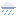
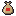
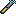
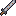
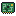

Tela inicial ainda não existe no jogo
Hoje o jogo abre direto no save. A tela de título resolve o "Novo jogo" e o "Salvar e sair" que estão em pendencias.md. A Lua do canto é a fase de verdade de hoje (plano 37), e o rodapé mostra o céu real que o jogo puxou.
CYBER
MOON
a última fazenda antes da cidade
Lua crescente hoje

Chuva fraca, 21 grausO céu da fazenda segue o seu céu.
● Conectado como fazendeira_07
v0.37 . IFSC
Conta online tela_de_conta.tscn
O mesmo fluxo do plano 36 (entrar, criar, confirmar código), num painel com cara de terminal de acesso. Erro aparece em âmbar, não em vermelho.
Conta online
Com conta, o seu nome no chat e no lobby é o da conta.
@ fazendeira07@vila.net
●●●●●●●●_
Nome no chat (só para criar conta)
! Senha curta. Use 8 caracteres ou mais.
Entrar
Criar conta
Voltar
Digite o código que chegou no e-mail
Opções nova, aba do menu de pausa e da tela inicial
Junta o que hoje está espalhado no menu de debug (F3): volume, tela, as chaves do mundo real do plano 37 e o "Salvar e sair". O debug continua existindo, só para a equipe.
Opções
Som
Ambiente (chuva, vento)50
Tela
Tela cheia
Linhas de varredura
Tremor na tela ao bater
Mundo real
Começar na hora do computador
Clima da minha cidade
Fase da Lua de verdade
CidadeFlorianópolis ▾
A Lua cheia rende mais na colheita e clareia a noite.
Controles
Mapa de teclasVer
HUD da fazenda, de dia barras_de_status, hud_relogio, barra_rapida, hud_creditos, destaque_de_interacao, hud_chat
A barra de vida e a de stamina viram baterias segmentadas. O relógio ganha a faixa colorida do dia (as mesmas cores do hud_relogio.gd) e o ícone da Lua. O minimapa do plano 33 entra no canto de baixo.
fazendeira_07
Nv. 4
Vida86 / 100
Stamina54 / 100
14:20
TardeBrotação, dia 12

Tomate x3 no inventário
F Regar
fazendeira_07: alguém tem semente de milho?
rafa_entrega: a Marta tem, mas tá cara
kenji entrou na vila.
HUD de noite, com aviso hud_relogio e hud_aviso
Perto das 2:00 a hora fica âmbar e pisca (no jogo era vermelha). Lua cheia de verdade: o ícone grande do relógio vira a Lua, a noite fica mais clara e o aviso lembra que a colheita rende mais.
Vida100 / 100
Stamina12 / 100
Cansada. Tudo gasta o dobro.
MadrugadaBrotação, dia 12
Já é tarde
Durma antes das 2:00 ou você apaga onde estiver.
Lua cheia: a colheita de amanhã rende +25%
Conversa dialogue/caixa_dialogo.tscn
Igual ao jogo: os modelos 3D ficam num palco atrás da caixa, o jogador à esquerda e o morador à direita, virados um para o outro e animados. Quem está falando fica aceso e um pouco à frente; quem escuta fica mais escuro. O nome vem numa etiqueta de neon, com os corações da amizade no canto, e as escolhas aparecem só no fim da fala.
Marta Bueno
dona do mercado
Tomate bonito desse jeito? Seu avô ia ficar orgulhoso. Agora, se for vender pra corporação, eu nem quero saber.
F continuar ▼
Dar presente
Conversar
Loja
Até mais
Serviços e loja menu_de_servicos e tela_de_loja
A loja tem aba de comprar e de vender, estoque do dia e o preço em ouro. Quando falta crédito, o preço fica apagado e a mensagem vem em âmbar.

Vitor Alencar
Oficina do Vitor
Loja
Aprimorar
Sair
"Não pechincha. Já tá barato."
Loja 1.240
ComprarVender

Bastão de choquex1680Escopeta serradax1920
Nanogelx860
Estimulantex590
Núcleo sintéticox12.400
Chapa recicladax2035
Escopeta serrada
Arma de perto. Cone largo, empurra o inimigo. Recarrega devagar.
Dano 24Alcance curtoStamina 8
Depois da compra: 320 créditos
Comprar
Fechar
Bancada de aprimoramento tela_de_aprimoramento.tscn
O nível atual e o próximo lado a lado, com a diferença em ciano. Material que falta aparece em âmbar com o quanto falta; o que tem, em verde.
Bancada 1.240
Agora

Espadão Nv 2
Dano 18
Golpe 3 no combo
▶
Próximo
Espadão Nv 3
Dano 24 (+6)
Golpe 4 libera
Precisa de
Sucata de metal12 / 8
Servomotor2 / 2

Placa queimada (Galeria)0 / 1, falta 1Créditos1.240 / 400
A placa queimada sai do Compactador, na Galeria.
Aprimorar
Fechar
Baú de venda tela_de_bau.tscn
Dois lados com a mesma grade: baú à esquerda, mochila à direita. O valor da venda atualiza conforme os itens entram. O que entra no baú de venda vai para o caminhão do Rafa de madrugada.
Baú de venda
Valor da venda1.104
O Rafa recolhe às 2:00. Você recebe ao acordar.
Inventário
Barra rápida
Clique num item para mandar para o outro lado.
Fechar
Resumo das vendas resumo_de_vendas.tscn
Ao acordar, a nota do caminhão do Rafa, num papel amassado de cupom fiscal. Um jeito de a economia ter cara de vila e não de planilha.
Entregas Duarte
recolhido às 02:00, dia 12
Tomate x24720
Milho x12288
Cenoura x896
Bônus de Lua cheia+0
Total1.104
"Vendi bem, não reclama. R."
+1.104 créditos
Desmaio tela_de_desmaio.tscn
Sem sangue e sem vermelho: a tela sai do ar como sinal perdido, em violeta. Diz quem te achou e o que custou.
SINAL PERDIDO
Você apagou no talhão às 02:00.

Iara te achou e te levou para casa.
Consulta: 120 créditos . Stamina pela metade amanhã
F acordar
Menu de pausa: inventário menu_pausa.tscn
As abas do menu de pausa ficam numa fileira só, trocadas com Q e E (L1 e R1 no controle). O cartão da direita mostra o item focado, com o preço de venda e o que ele faz. Os estados do slot (focado, segurando, selecionado) são os do slot_inventario.gd.
Q
InventárioEquipamentoRelacionamentosDiárioMapaCalendárioOpções
E
Mochila 30 / 40
Barra rápida
Solte aqui para jogar fora.
10 slots se abrem com a mochila de couro sintético.
Cenoura, repolho e um tomate que não ficou bonito para vender. Esquenta até a alma.
+40 vida+30 stamina
Vende por85
Comer
F usar G pegar 1..0 mandar para a barra
Menu de pausa: equipamento aba de equipamento do menu_pausa
O jogador de corpo inteiro no meio, com a arma e o acessório em volta. Os números de combate ficam à direita, com o que muda se trocar de arma.
Q
InventárioEquipamentoRelacionamentosDiárioMapaCalendárioOpções
E
Arma na mão
Nv2
Espadão de sucata
pesado, combo de 3
Ferramentas
Acessório
Troféus

◀ arraste ou use o direcional direito para girar ▶
fazendeira_07 . Nv 4
620 / 1.000 de experiência
Números
Vida máxima100
Stamina máxima100
Dano18
Velocidade do golpelenta
Giro até o inimigoligado
Se trocar pelo bastão de choque Nv1
Dano12 (−6)
Velocidaderápida
Atordoasim
Menu de pausa: relacionamentos aba_de_relacionamentos.tscn
Um cartão por morador, com o modelo 3D dele, corações em rosa, e duas marcas do dia: se já conversou e se já deu presente. O aniversário perto aparece em destaque. O elenco do plano 30 entra na mesma lista.
Q
InventárioEquipamentoRelacionamentosDiárioMapaCalendárioOpções
E
Menu de pausa: diário de missões plano 32, ainda não existe
Missões ativas no alto, concluídas embaixo. A acompanhada tem a estrela e vira o waypoint do minimapa. As etapas têm caixinha: feita em ciano, a atual em ouro.
Q
InventárioEquipamentoRelacionamentosDiárioMapaCalendárioOpções
E
Ativas
★ A água que sumiu
vila Osso para o Téo
dia 20 tomates para a Marta
vila Peça para a antena
Concluídas
✓ Primeira colheita
✓ O registro da Galeria

A água que sumiu
Principal . pedida por Bento Arruda
As máquinas da Galeria fecharam o registro que levava água às fazendas. O Bento sabe o caminho, mas o joelho não aguenta mais a escada.
Falar com o Bento na entrada da Galeria
Descer até a sala das bombas
Vencer o Compactador aqui
Abrir o registro e voltar para contar
Recompensa
150
e água nos talhões de novo
★ Acompanhando
Ver no mapa
Menu de pausa: mapa grande plano 33, ainda não existe
O mapa sai do mesmo traçado que gera o terreno, desenhado como imagem e sem segunda câmera. Moradores aparecem com a cor deles; as dungeons com a cor do tema de cada uma.
Q
InventárioEquipamentoRelacionamentosDiárioMapaCalendárioOpções
E
Sua fazenda
Vila
Galeria
Biodomo
Torre
Lago
viaduto
Legenda
Você
Missão
Marta
Kenji
Bento
Dungeon
M fecha
F marca ponto
Calendário calendario.tscn
Trinta dias em semanas de seis, com a folga em roxo, como o calendario.gd. Cada dia mostra a fase da Lua (plano 37), aniversários em rosa e o dia de feira em ouro.
<
Brotação, ano 1
>
RaizBrotoChuvaSinalFeiraFolga
♥ Dia 9: aniversário do Kenji
Esquerda e direita trocam a estação. Esc ou B fecha.
Lobby e convite tela_de_lobby, hud_convite, hud_chat
Cada dungeon vira um cartão com o tema, o chefe e o que destrava. A trancada diz qual troféu falta. A equipe mostra o anfitrião em ciano e quem está pronto.
Dungeon ● Online
Galeria de Manutenção
Água . 3 salas
Chefe: Compactador
Aberta desde o dia 1
Biodomo Abandonado
Sementes . 4 salas
Chefe: Colheitadeira
Aberta
TRANCADA
Torre de Retransmissão
Sinal . 5 salas
Chefe: Auditor
Falta o troféu da Colheitadeira
Sua equipe 2 / 4
fazendeira_07(anfitriã)pronta
rafa_entregaescolhendo arma...
vaga livre
Entrar na dungeon
Sair da equipe
Conta
Fechar
Convite
kenji_antena chamou você para o Biodomo.
Chat
rafa_entrega: leva nanogel
fazendeira_07: levei 3
kenji_antena está online.
Escreva e aperte Enter_
HUD da dungeon e do chefe hud_de_dungeon e hud_do_chefe
Barra do chefe no alto, em ouro na fase 1 e violeta na fase 2 (as cores do hud_do_chefe.gd). Número de dano em magenta, nunca vermelho. O aviso de golpe forte é um losango de alerta sobre o chefe. Os aliados ficam empilhados à esquerda.
Compactador
fase 1
Prensa . Onda de choque . Chuva de sucata58%
Galeria de Manutenção
Sala 3 de 3 . 06:42
✓ Desligar as bombas 2 / 2
▸ Vencer o Compactador
rafa_entrega
precisa de cura
!
-18
-32 CRÍTICO
Dungeon concluída nova, abre com o baú de recompensa
Hoje o fim da dungeon é só o baú. A tela junta o que cada um levou, o troféu e o tempo, com partícula de estouro em ciano e ouro (plano 19).
REGISTRO ABERTO
Galeria de Manutenção . 08:12
Placa do Compactador
Abre o Biodomo e uma conversa nova com o Vitor.
Você levou
+340 experiência
rafa_entrega levou 7 itens
Voltar para a vila
Jogar de novo
Folha de componentes
As peças soltas, com todos os estados. É daqui que sai o Theme do Godot quando a interface for refeita.
Botão
Normal
Focado
Destrutivo
Desligado
Barras
Vida86
Stamina54
Experiência62%
Chefe, fase 221%
Céu e Lua
Faixa do dia: madrugada, manhã, tarde, fim de tarde, noite.
Destaque de interação
F Colher
F Trancada
Avisos
+45 créditos
!Mochila cheia
♥Marta gostou do presente
Dano e cura
-18
-32
+40
Normal em magenta, crítico em ciano, cura em verde. Nada vermelho.